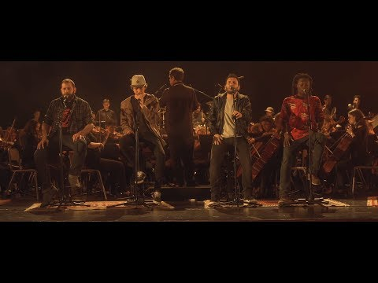

Entre montañas avanza la feria ambulante que grita y que canta. Alegre de cara al mundo. Y en bambalinas las lágrimas saltan.
Entre las sombras del público un muerto, que pide a gritos un aire más fresco. Le hemos traído un invento. Vinimos en una alfombra así que súbete.
Súbete desde aquí se ve la sangre, y los ojos del miedo en las pateras, y el discurso del Papa contra el hambre. Y el Edén que amuralla sus fronteras. Súbete, desde aquí se ve un enjambre de ministros, alcaldes y banderas. Tenemos una alfombra que vuela y va, matándonos de pena
Y el trapecista gritó: ¿Cómo me lanzo al amor? Y la pintora gritó: ¿Quién me ha robado el color? Todo mi circo lloró mordido por el dolor.
Atrás quedará el guion del hombre que hizo del dinero su papel, su condena y su Dios. Y ahora no queda luna llena que transforme a este lobo dormido, que habla entre suspiros, que perdió la pista a su enemigo. Atrás quedará
